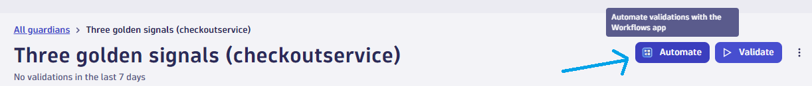
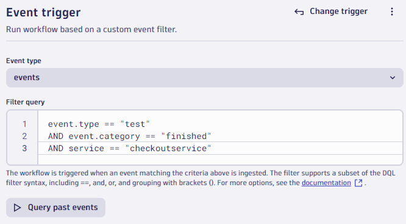
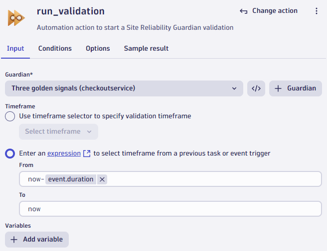

Automate the Site Reliability Guardian#
Site reliability guardians can be automated so they happen whenever you prefer (on demand / on schedule / event based). A Dynatrace workflow is used to achieve this.
In this demo:
- A load test will run and send a "load test finished" Software Delivery Lifecycle event into Dynatrace (see below).
- A Dynatrace workflow will react to that event and trigger a guardian.
Let's plumb that together now.
Sample k6 teardown test finished event
For information only, no action is required.
This is already coded into the demo load test script.
export function teardown() {
// Send event at the end of the test
let payload = {
"entitySelector": "type(SERVICE),entityName.equals(checkoutservice)",
"eventType": "CUSTOM_INFO",
"properties": {
"tool": "k6",
"action": "test",
"state": "finished",
"purpose": `${__ENV.LOAD_TEST_PURPOSE}`,
"duration": test_duration
},
"title": "k6 load test finished"
}
let res = http.post(`${__ENV.K6_DYNATRACE_URL}/api/v2/events/ingest`, JSON.stringify(payload), post_params);
}
}
Create a Workflow to Trigger Guardian#
Ensure you are still on the Three golden signals (checkoutservice) screen.
- Click the
Automatebutton. This will create a template workflow. - Change the
event typefrombizeventstoevents. - Change the
Filter queryto:
event.type == "CUSTOM_INFO" and
dt.entity.service.name == "checkoutservice" and
tool == "k6" and
action == "test" and
state == "finished"
- Click the
run_validationnode. - Remove
event.timeframe.fromand replace with:
{% raw %}
now-{{ event()['duration'] }}
The UI will change this to now-event.duration.
-
Remove
event.timeframe.toand replace with:now -
Click the
Savebutton.
Workflow Created#
The workflow is now created and connected to the guardian. It will be triggered whenever the platform receives an event like below.
  
The workflow is now live and listening for events.